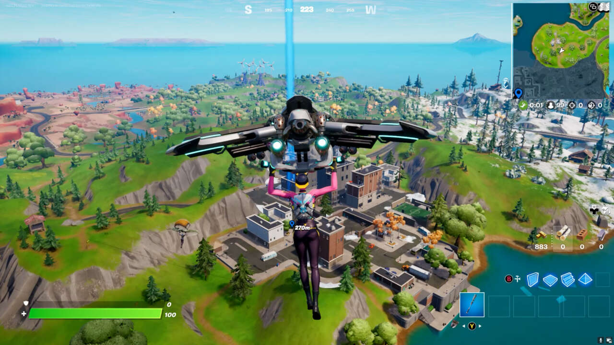

Pong (1972) -Primul joc comercial de succes, creat de Atari
Această perioadă marchează un punct de cotitură important în industria jocurilor video, în care s-a produs tranziția de la stilurile clasice de gameplay la experiențe narative și tehnice din ce în ce mai sofisticate. Anul 2011 a fost extrem de bogat în lansări care au devenit ulterior titluri de referință.
Unul dintre cele mai influente jocuri lansate atunci a fost The Elder Scrolls V: Skyrim, care a redefinit genul RPG open-world. Jucătorii aveau libertate aproape totală într-un univers vast, cu sute de questuri și un sistem de evoluție personalizabil. Tot în 2011, Dark Souls a introdus un nou tip de dificultate și design level-based, punând accent pe provocări, explorare și storytelling ambiental. În același an, jocul Minecraft a fost lansat oficial, deși era deja foarte popular din perioada beta. Minecraft a devenit rapid un fenomen global, punând bazele unei noi generații de creatori și jucători datorită sistemului său sandbox și libertății totale de construcție.
În 2012, se remarcă lansarea unor titluri ca Journey, care a uimit criticii prin estetica artistică, simplitatea gameplay-ului și profunzimea emoțională transmisă fără cuvinte. În paralel, Far Cry 3 a redefinit așteptările față de shooterele open-world, introducând un antagonist memorabil și un sistem de upgrade-uri prin crafting și explorare. Tot în această perioadă a crescut influența platformelor de streaming precum Twitch, care a schimbat pentru totdeauna modul în care oamenii consumă și interacționează cu jocurile video.
Anul 2013 este deosebit de important datorită lansării PlayStation 4 și Xbox One, care marchează începutul celei de-a opta generații de console. Aceste console au permis grafică mai realistă, integrare cu social media și sisteme de jocuri digitale mai bine puse la punct. Pe partea de software, The Last of Us de la Naughty Dog a demonstrat cum un joc poate livra o poveste profundă, cinematografică, cu personaje realiste și o atmosferă tensionată. Tot în 2013, Grand Theft Auto V a stabilit recorduri mondiale de vânzări și a devenit un punct de referință pentru jocurile open-world, aducând o lume vibrantă și plină de activități, dar și componenta online GTA Online, care a continuat să evolueze mulți ani după lansare.
Acești ani au reprezentat o perioadă de stabilizare și experimentare în industrie. S-a remarcat o diversificare puternică a genurilor și o consolidare a formatului „live-service”, în care jocurile sunt menținute prin actualizări constante în loc de continuări clasice.

În 2014, Destiny, dezvoltat de Bungie, a fost primul joc major care a îmbrățișat complet modelul de „joc live”. Combinând elemente de shooter cu RPG și MMO, Destiny a fost apreciat pentru gameplay-ul fluid, dar criticat inițial pentru lipsa de conținut. Pe termen lung, a devenit un standard pentru jocurile cu servicii live. În același an, Middle-earth: Shadow of Mordor a introdus sistemul „Nemesis”, care genera inamici unici și evolutivi, capabili să-și amintească acțiunile jucătorului – un element inovator ce a influențat designul narativ în jocurile ulterioare.
2015 a adus unul dintre cele mai aclamate jocuri RPG din toate timpurile: The Witcher 3: Wild Hunt. Jocul dezvoltat de CD Projekt Red a fost lăudat pentru lumea sa detaliată, povestea matură și misiunile secundare bine scrise. A devenit un etalon pentru calitatea narativă și designul open-world. Tot în acest an, Rocket League a devenit un hit neașteptat, combinând sportul cu mașinile și reușind să creeze un joc simplu, dar extrem de competitiv.
În 2016, Overwatch de la Blizzard a redefinit genul shooter-ului competitiv, introducând eroi cu abilități unice și o estetică prietenoasă. Succesul său a revitalizat genul și a inspirat numeroase alte titluri. De asemenea, anul a marcat începutul erei realității virtuale (VR), cu lansarea comercială a Oculus Rift, HTC Vive și PlayStation VR. Deși limitate la început de preț și accesibilitate, aceste platforme au pus bazele unei direcții tehnologice noi.
2017 a fost anul în care Nintendo Switch a fost lansat, o consolă hibrid care a combinat portabilitatea cu experiența de joc de pe TV. Această inovație hardware a propulsat din nou Nintendo în topul industriei. Odată cu lansarea consolei, The Legend of Zelda: Breath of the Wild a uimit comunitatea prin designul său liber și explorarea fără restricții, iar Super Mario Odyssey a continuat tradiția Nintendo de a crea jocuri accesibile, dar profunde.
Tot în această perioadă, genul Battle Royale a explodat odată cu PlayerUnknown’s Battlegrounds și ulterior Fortnite. Aceste jocuri au schimbat complet peisajul multiplayer, cu lupte intense între zeci sau sute de jucători și actualizări constante. Fortnite, în special, a devenit un fenomen cultural, influențând moda, muzica și chiar sporturile.
În 2018, God of War a revenit într-o formă reinventată, cu accent pe poveste, relația tată-fiu și mitologia nordică. Jocul a fost aplaudat pentru narațiunea sa matură și sistemul de luptă refăcut. În același an, Red Dead Redemption 2 de la Rockstar a stabilit un nou standard pentru realismul în jocuri: de la comportamentul animalelor până la detalii subtile de interacțiune socială.
2019 a adus noi iterații în genul Battle Royale, cum ar fi Apex Legends, dezvoltat de Respawn Entertainment, care a adăugat elemente de viteză și personaje unice într-un format familiar. Totodată, titluri ca Control și Death Stranding au propus noi forme de storytelling și atmosferă, în special prin designul vizual și teme filozofice.
Pandemia COVID-19 din 2020 a crescut semnificativ numărul de jucători și orele petrecute în jocuri. În același an, a fost lansată a noua generație de console: PlayStation 5 și Xbox Series X|S. Acestea au adus timpi de încărcare extrem de rapizi datorită SSD-urilor, grafică avansată cu ray tracing și suport extins pentru 4K.
Printre cele mai importante titluri din această perioadă se numără The Last of Us Part II, Ghost of Tsushima, Resident Evil Village și Elden Ring. Elden Ring (2022) a fost una dintre cele mai mari lansări ale deceniului, combinând filosofia de design FromSoftware cu o lume deschisă uriașă, creată în colaborare cu George R. R. Martin.
În 2023, Tears of the Kingdom, continuarea lui Breath of the Wild, a dus mai departe explorarea liberă și sistemele de interacțiune emergentă. În același timp, Starfield a oferit o experiență spațială vastă, cu accent pe explorare și colonizare.
În 2024 și 2025, accentul s-a mutat pe inteligență artificială în jocuri – NPC-urile au devenit mai realiste, capabile de reacții și conversații dinamice. De asemenea, au câștigat teren jocurile construite pe cloud și cele care folosesc realitatea augmentată. Studiourile de jocuri au început să acorde o atenție tot mai mare sustenabilității, accesibilității și incluziunii.
Pong (1972) -Primul joc comercial de succes, creat de Atari

Adventure (1979) -Primul joc cu un "Easter egg", ascunzand numele creatorului sau

DOOM (1993) -A definit genul FPS(first person shooter) si a revolutionat grafica 3D.

Minecraft (2009) -Cel mai vandut joc din lume